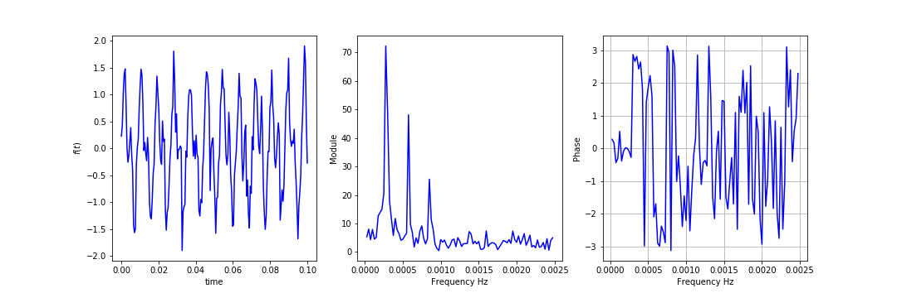

Ce post est un rapide aperçu de notions basiques sur les séries de Fourier et sur la transformée de Fourier. Je me suis restreint par choix à l’étude des fonctions réelles.
La première notion importante lorsqu’on considère l’analyse de Fourier est la notion de péridocité d’une fonction. Un fonction périodique est une fonction qui se répète dans le temps, plus formellement:
Definition (Fonction périodique) Soit \(f: \mathbb{R} \rightarrow \mathbb{R}\) une function. On dit que \(f\) a une période de \(T\) si \(f(x+T)=f(x)\) pour tout \(x\)
En quelque sorte une fonction périodique est facile à étudier car il suffit de l’étudier sur un intervalle de longueur \(T\). Dans ce chapitre on considère des fonctions périodiques de période \(T\), on note \(\omega=\frac{2\pi}{T}\) la pulsation associée.
Definition (Série de Fourier d’une fonction) On appelle série de Fourier d’une fonction \(f\) continue \(T\)-périodique la série:
\[\begin{equation} S(f)(x)=c_{0}+ \sum_{n \geq 1} c_n(f) e^{in\omega x}+c_{-n}(f) e^{-in\omega x}\stackrel{def}{=}\sum_{n\in \mathbb{Z}} c_n(f) e^{in\omega x} \end{equation}\] avec le nième coefficient de Fourier pour \(n\in \mathbb{Z}\), \(c_n(f)=\frac{1}{T} \int_{0}^{T} f(t)e^{-in\omega t}dt\).
On peut aussi l’écrire sour la forme:
\[\begin{equation} S(f)(x)=\frac{a_{0}}{2}+\sum_{n=1}^{\infty} a_n(f) \cos(n\omega x) + b_n(f) \sin(n\omega x) \end{equation}\] avec \(a_{n}(f)=\frac{2}{T} \int_{0}^{T} f(t) \cos(n\omega t)dt\) et \(b_{n}(f)=\frac{2}{T} \int_{0}^{T} f(t) \sin(n\omega t)dt\)
Remarque On peut définir ces coefficients sur n’importe quel intervalle de longueur \(T\) puisque la fonction est périodique.
Relations entre les coefficients de Fourier On peut vérifier facilement que les coefficients vérifient les relations \(c_n(f)=\frac{a_n(f)-ib_n(f)}{2}\), \(a_n(f)=c_n(f)+c_{-n}(f)\), \(b_n(f)=i(c_n(f)-c_{-n}(f))\)
Plusieurs questions se posent: quel intrêt de considérer cette quantité ? est-ce que la série converge ? Vers quelle limite ? Pour analyser ces question on s’intéresse à la somme partielle \(S_{N}(f)(x)=\sum_{n=-N}^{N} c_n(f) e^{in\omega x}\). Il y a globalement trois résultats qui répondent à ces questions.
Le premier est le théorème de Dirichlet qui nous dit qu’une fonction périodique assez régulière est égale à sa série de Fourier. Ces hypothèses de régularité sont assez faibles, on suppose seulement que \(f\) est continuement dérivable par morceaux, c’est à dire qu’il existe un ensemble d’intervalles sur lesquels \(f\) est dérivable dont la dérivée est continue.
Soit \(f\) une fonction périodique et \(x_{0}\) un point. On suppose que \(f\) est \(C^{1}\) par morceaux. Si \(f\) admet des limites à droite et à gauche en \(x_{0}\) (notée \(f(x_{0}^{+})\) et \(f(x_{0}^{-})\)) alors \(S_{N}(f)\) converge en \(x_{0}\) et: \[ \begin{equation} S(f)(x_{0})=\frac{f(x_{0}^{+})+f(x_{0}^{-})}{2} \end{equation} \] Si \(f\) est continue en \(x_{0}\) alors \(S(f)(x_{0})=f(x_{0})\).
La démonstration s’appuie sur l’utilisation des noyaux de Dirichlet.
La bonne nouvelle est que si jamais la série \(S_{N}(f)\) est convergente en un point \(x\) et que \(f\) est continue alors la limite est nécessairement \(S(f)(x)=f(x)\). Pour prouver cela on regarde la moyenne de Césaro de \(S_{N}(f)\) et on a le résultat suivant qui s’appelle le théorème de Fejér:
Soit \(f\) une fonction continue \(2\pi\) périodique. On note \(\sigma_{N}(f)=\frac{1}{N}\sum_{n=0}^{N-1} S_{n}(f)\) la somme de Césaro. Cette somme converge uniformément vers \(f\). Plus précisément:
\[\begin{equation} \lim_{N\rightarrow \infty} \|\sigma_{N}(f)-f\|_\infty=0 \end{equation}\]
Dans ce théorème on a noté \(\|f\|_\infty=\underset{x\in[-\pi,\pi]}{\sup}f(x)\). On peut utiliser ce résultat pour prouver que la série de Fourier de \(f\) est égale à \(f\) sous les hypothèses précédentes.
Soit \(f\) continue et \(2\pi\) périodique et \(x_{0}\in \mathbb{R}\). Supposons que \(\lim_{N\rightarrow \infty} S_{N}(f)(x_{0})=l\) alors \(l=f(x_{0})\)
Preuve On sait par le théorème de Césaro que si une suite converge alors sa moyenne de Césaro converge vers la même limite. Par hypothèse \(\lim_{N\rightarrow \infty} S_{N}(f)(x_{0})=l\) donc \(\lim_{N\rightarrow \infty} \sigma_{N}(f)(x_{0})=l\). Or on a \[\lim_{N\rightarrow \infty} \|\sigma_{N}(f)-f\|_{\infty}=0\] par le théorème de Fejér donc la limite de \(\sigma_{N}(f)(x_{0})\) est \(f(x_{0})\).
Remarque Le résultat précédent ne dit pas que si la fonction est continue et périodique alors elle est égale à sa série de Fourier. Il dit seulement que si la série de Fourier converge en un point alors elle converge vers la valeur de la fonction (dans le cas où la fonction est continue et périodique bien sûr).
On a vu dans les paragraphes précédents des conditions pour lesquelles la fonction était égale à sa série de Fourier. Peut-on aller plus loin ? On peut en effet se demander à quel point la fonction est ‘‘loin’’ de sa série de Fourier lorsque les hypothèses des théorèmes précédents ne sont pas vérifiées.
Pour cela il faut nous munir d’une notion de distance entre les fonctions. Dans le cas des fonctions ‘‘assez régulières’’ cette notion peut être définie en utilisant un produit scalaire et sa norme associée. En effet l’espace des fonctions continue par morceaux et périodiques est un espace vectoriel qui peut être muni du produit scalaire selon la définition ci dessous:
Definition (L’espace des fonctions périodiques) On note \(C_{m}([0,T],\mathbb{C})\) l’espace de fonctions continues par morceaux et périodiques de période \(T\) à valeur dans \(\mathbb{C}\). C’est un espace vectoriel Euclidien associé au produit scalaire \(\langle f,g\rangle=\frac{1}{T}\int_{0}^{T} f(t)\overline{g(t)}dt\). Il est associé la norme:
\[ \lVert f \Vert_{2}=\sqrt{\frac{1}{T}\int_{0}^{T} |f(t)|^{2}dt} \]
Grâce à cette norme on peut trouver une notion de distance. Pour deux fonctions \(f\) et \(g\) de \(C_{m}([0,T],\mathbb{C})\) la quantité \[\lVert f-g \rVert_{2}\] mesure la distance entre ces deux fonctions, elle est nulle si et seulement si ces deux fonctions sont égales. On peut utiliser sur cet espace de fonctions toutes les notions d’analyse géométrique qu’on connait dans le plan en utilisant ce produit scalaire. On a alors le théorème suivant:
Soit \(f:\mathbb{R} \rightarrow \mathbb{C}\) une fonction continue par morceaux \(2\pi\) périodique. La série de Fourier de \(f\) converge en moyenne quadratique vers \(f\). Plus précisément: \[\begin{equation} \lim_{N\rightarrow \infty} \lVert S_{N}(f)-f \rVert^{2}_2=0 \end{equation}\]
Ce résultat nous dit qu’en moyenne sur \([-\pi,\pi]\) la fonction n’est pas très loin de sa série de Fourier lorsque la fonction est continue par morceaux. Attention elle ne dit pas qu’en un point donné la série de Fourier converge vers la valeur de la fonction (voir remarque plus haut), mais bien qu’en moyenne sur l’intervalle la série de Fourier et sa fonction ne sont pas loin.
En utilisant ce résultat on peut prouver une égalité très utile en pratique qui s’appelle l’égalité de Parseval:
Soit \(f\) un fonction périodique de période \(2\pi\) continue par morceaux. Alors: \[\begin{equation} \lVert f \rVert_{2}^{2}=\sum_{n=-\infty}^{+\infty} |c_{n}(f)|^{2}= \frac{|a_{0}(f)|^{2}}{4}+\frac{1}{2} \sum_{n\geq 1}(|a_n(f)|^2 +|b_n(f)|^2) \end{equation}\]
Preuve On note \((e_n)\) la suite de fonctions \(e_n(x)=e^{in \omega x}\). Pour \(p\neq q\) on a \(\langle e_p,e_q \rangle=\frac{1}{T}\int_{0}^{T}e^{ip\omega x}e^{-iq\omega x}dx=\frac{1}{T}\int_{0}^{T}e^{i(p-q)\omega x}dx\). Donc \(\langle e_p,e_q \rangle=\frac{1}{Ti(p-q)\omega}[e^{i(p-q)\omega T}-1]=\frac{1}{Ti(p-q)\omega}[e^{2\pi i(p-q)}-1]\). Or \(e^{2\pi i(p-q)}=1\), donc \(\langle e_p,e_q \rangle=0\). On peut vérifier de la même manière que \(\langle e_p,e_p \rangle=1\). On a donc que \((e_n)\) forme une base orthonormée de \(C_{m}([0,T],\mathbb{C})\).
Par définition \(S_N(f)(x)=\sum_{n=-N}^{N} c_n(f)e_n=\sum_{n=-N}^{N} \langle f,e_n \rangle e_n\). On va appliquer le théorème de Pythagore aux vecteurs orthogonaux (qui sont ici des fonctions) \(f\) et \(S_N(f)-f\). On a alors
\[\lVert f\rVert_{2}^{2}=\lVert S_N(f)-f\rVert_{2}^{2}+\lVert S_N(f)\rVert_{2}^{2}\]
En utilisant le théorème de convergence en moyenne quadratique on fait tendre \(N\) à l’infini, (je ne détaille pas mais \(\lVert S_N(f)\rVert_{2}^{2}\) converge) dans cette égalité ce qui nous donne \(\lVert S(f)\rVert_{2}^{2}=\lVert f\rVert_{2}^{2}\).
Or comme \((e_n)\) est une base orthonormée on a:
\[\lVert S(f) \rVert_{2}^{2}=\sum_{n=-\infty}^{+\infty} \left|c_{n}(f)\right|^{2}=\frac{a_{0}^{2}}{4}+\sum_{n=1}^{+\infty} \frac{1}{4} (|a_n|^{2}+|b_n|^{2})+\frac{1}{4} (|a_n|^{2}+|b_n|^{2})\]
Ce qui nous donne la formule souhaitée.
D’après les paragraphes précédents on a l’impression que n’importe quelle fonction périodique un peu régulière peut être vue comme étant égale à sa série de Fourier, ou en tout cas que les deux sont proches. Cependant on peut tempérer cette observation par le théorème de Banach-Steinhaus. Je ne vais pas détailler ce résultat mais il dit en substance que dans l’ensemble des fonctions continues et périodiques l’ensemble des fonctions dont la série de Fourier diverge est ‘‘grand’’. Plus précisément il existe des fonctions continues périodiques qui sont différentes de leur série de Fourier. C’est d’autant plus remarquable qu’il est assez difficle de construire ces fonctions.
Les séries de Fourier ont plusieurs intérêts majeurs qui sont basés sur le fait qu’il existe une dualité entre une fonction et sa série de Fourier. Plus précisément qu’une fonction périodique et sa série sont équivalents à beaucoup de niveaux. Or des fois il est plus simple d’étudier la serie de Fourier que la fonction elle-même ou inversement.
Un des premiers avantage est plutôt mathématique. Il permet notamment de trouver la valeur de certaines séries \(\sum_{n\geq0}u_{n}\). En effet en réécrivant ces séries comme une série de Fourier d’une certaine fonction simple on peut utiliser l’égalité de Parseval pour calculer la valeur de la série. Le cas le plus connu est peut-être \(\sum_{n=1}^{\infty}\frac{1}{n^{2}}=\frac{\pi^{2}}{6}\) qui correspond à la fonction \(\pi\)-périodique définie sur \([0,\pi[\) par \(f(x)=x\). Un deuxième avantage mathématique est l’utilisation des series de Fourier pour l’étude d’équations aux dérivées partielles. Par exemple les cordes vibrantes, l’équation de diffusion de la chaleur etc…
Toujours en utilisant cette dualité entre fonction et série de Fourier un second avantage plus ‘‘pratique’’ est l’analyse harmonique. Elle est reliée à la notion de ‘‘fréquence’’ d’un signal. On en parlera plus dans la partie sur la transformée de Fourier mais, en quelques mots, cette notion permet de voir un signal autrement qu’en regardant sa représentation temporelle mais plutôt en regardant sa représentation ‘‘fréquentielle’’ ce qui se révèle très pertinent dans certains cas.
En pratique pour calculer les coefficients de Fourier on peut utiliser les formules suivantes:
\(f\) est une fonction réelle Si \(f\) est une fonction réelle alors \(a_n(f),b_n(f) \in \mathbb{R}\) et \(\overline{c_n(f)}=c_{-n}(f)\)
Parité de \(f\) Soit \(n\geq 1\). Si \(f\) est paire alors \(b_n(f)=0\), si \(f\) impaire alors \(a_n(f)=0\). Dans les deux cas les coefficients valent 2 fois la valeur précédente sur la demi période.
Règles de calculs Linéarité: les coefficents \(c_n\) de \(a f(x)+b g(x)\) sont \(a c_n(f)+ b c_n(g)\). Translation: le coefficient de \(f(x-x_{0})\) est \(c_{n}(f)e^{-2in\omega x_{0}}\). Renversement temporel: le coefficient de \(f(-x)\) est \(c_{-n}(f)\).
Les notions précédentes étaient relatives aux fonctions périodiques. Que se passe t’il lorsqu’on veut définir des notions équivalentes pour des fonctions que ne sont pas périodiques ? Par exemple considérons les deux fonctions suivantes:
La courbe en bleue représente la fonction périodique précédente à laquelle on a ajouté un bruit. Elle ne se répète plus exactement dans le temps, même si on devine bien un certain pattern sous jacent. La deuxième fonction est une fonction “créneau” ou “porte” qui est nulle avant 0.05 et vaut 1 ensuite.
Le principe de la transformée de Fourier est de définir la notion de fréquence pour des fonctions non périodiques.
L’idée centrale est de considérer un signal non périodique comme périodique mais de période infinie, autrement dit que le motif de la fonction se répète à partir de l’infini. On va donc regarder le comportement des notions précédentes lorsque \(T \rightarrow \infty\).
Que deviennent les fréquences ? On remarque que lorsque \(T \rightarrow \infty\) la fréquence \(f=\frac{1}{T}\) tend vers 0. Ainsi les \(n\omega\) se rapprochent de plus en plus à mesure que \(T\) grandit. Ainsi on ne peut plus distinguer un \(\frac{n}{T}\) d’un \(\frac{n+1}{T}\) quand \(T \rightarrow \infty\) et donc une notion discrète de la pulsation ne suffit plus. On va donc remplacer les \(\frac{n\omega}{T}\) par un paramètre continu qui peut prendre toutes les valeurs dans \(\mathbb{R}\).
Que deviennent les coefficients de la série de Fourier ? On considère une fonction \(f\) intégrable sur \(\mathbb{R}\). On se propose d’étudier un peu \(\lim_{T \rightarrow \infty} c_n(f)=\lim_{T \rightarrow \infty} \frac{1}{T} \int_{-T/2}^{T/2} f(t)e^{-in w(T) t}dt\). On peut borner l’exponentielle par 1, on remarque donc que l’intégrale \(\int_{-T/2}^{T/2} f(t)e^{-in w(T) t}dt\) converge car \(f\) est intégrable. Donc que \(\lim_{T \rightarrow \infty} c_n(f)=0\). Ce qui ne nous donne pas beaucoup d’information sur ces coefficients. Cependant si on considère \(\lim_{T \rightarrow \infty} T c_n(f)\) alors cette limite existe et:
\[\begin{equation} \lim_{T \rightarrow \infty} T c_n(f)=\int_{-\infty}^{+\infty} f(t) e^{\frac{-2 i \pi n t}{T}}dt \end{equation}\]
On voit ici apparaître la transformée de Fourier d’un signal. Elle sera égal à la limite de \(T\) fois le coefficient de Fourier lorsque \(T\) devient très grand. En résumé on la définit ainsi:
Definition (Transformée de Fourier d’une fonction intégrable) Soit \(f:\mathbb{R} \rightarrow \mathbb{R}\) une fonction intégrable sur \(\mathbb{R}\). La transformée de Fourier de \(f\) est la fonction complexe définie en \(\omega\) par: \[\begin{equation} \hat{f}(\omega)=\mathcal{F}(f)(\omega)=\int_{-\infty}^{+\infty} f(t)e^{-2i\pi wt}dt \end{equation}\]
La transformée de Fourier est une fonction complexe et donc contient deux informations liées à sa partie réelle et sa partie imaginaire. Plus précisément comme \(\hat{f}(\omega)\) est un nombre complexe il peut s’écrire: \(\hat{f}(\omega)=\|\hat{f}(\omega)\|e^{i\phi(\omega)}\). Une représentation fréquentielle de \(f\) est donc une représentation de \(\|\hat{f}(\omega)\|\) (le module de la transformée de Fourier) et de \(\phi(\omega)\) (la phase de la transformée de Fourier).
Pour son analyse on s’intéresse donc à deux courbes qu’on appelle spectre d’amplitude et spectre de phase qui représentent respectivement le module de notre fonction et sa phase, en fonction de la pulsation \(\omega\) ou de la fréquence \(f=\frac{\omega}{2\pi}\).
En appliquant cette transformée au signal précédent on obtient ces différents spectres:

Ces courbes représentations fréquentielles de nos signaux sont une autre manière de représenter les représenter, et, souvent permettent une meilleur analyse de ces signaux.
Comme pour les séries de Fourier on peut se demander si on peut retrouver la fonction \(f\) au travers de sa transformée de Fourier afin d’avoir cette notion de “dualité” entre ces deux objets. Dans les séries de Fourier on avait souvent l’égalité entre la série de Fourier et la fonction. Ici la dualité va exister au travers de la notion de transformée de Fourier inverse. A l’aide de cette opération sur la transformée de Fourier on va pouvoir retrouver le signal original.
Definition (Transformée de Fourier inverse) Soit \(f:\mathbb{R} \rightarrow \mathbb{R}\) une fonction intégrable sur \(\mathbb{R}\). La transformée de Fourier inverse \(f\) est la fonction définie en un temps \(t\) par: \[\begin{equation} \mathcal{F}^{-1}(\hat{f})(t)=\int_{-\infty}^{+\infty} \hat{f}(\omega)e^{2i\pi \omega t}d\omega \end{equation}\]
On peut alors prouver que la transformée de Fourier inverse est égal à notre signal d’origine.
Soit \(f:\mathbb{R} \rightarrow \mathbb{R}\) une fonction intégrable sur \(\mathbb{R}\). Alors en tout point \(t\) où \(f\) est continue: \[\begin{equation} f(t)=\mathcal{F}^{-1}(\hat{f})(t) \end{equation}\]
La transformée de Fourier a de nombreuses propriétés intéressantes pour l’étude des signaux. La première concerne le produit de convolution de signaux. C’est une sorte de moyenne mobile de deux signaux temporels: la convoluée d’un signal \(f\) par un signal \(g\) est la moyenne glissante du produit \(f\), \(g\). Plus précisément elle est définie par:
Definition (Produit de convolution) Soit \(f,g:\mathbb{R} \rightarrow \mathbb{R}\) deux fonctions intégrables sur \(\mathbb{R}\) Le produit de convolution de \(f\) et \(g\) est noté \(f*g\) et est défini par: \[\begin{equation} f*g(x)=\int_{-\infty}^{+\infty} f(x-t)g(x) dt \end{equation}\]
Le produit de convolution est bien définie dans le cas des fonctions intégrables. En effet \(\int_{-\infty}^{+\infty} \int_{-\infty}^{+\infty} \lvert f(x-t)g(x) \rvert dt dx =\left(\int_{-\infty}^{+\infty} \lvert f(x) \rvert dx \right) \left(\int_{-\infty}^{+\infty} \lvert g(t) \rvert dt \right)<+\infty\). On peut en conclure que l’application \(x,t\rightarrow f(x-t)g(x)\) est intégrable sur \(\mathbb{R} \times \mathbb{R}\) donc par le théorème de Fubini que l’application \(t \rightarrow f(x-t)g(x)\) à \(x\) fixé est intégrable et donc que le produit de convolution existe.
Cette opération est symétrique \(f*g=g*f\). Il est notamment intéressant de considérer la convolution pour lisser des signaux. On peut l’illustrer en considérant le produit de convolution de deux fonctions créneaux centrées en 0 :
Le résultat est un signal triangulaire centré en 0. Cette opération se calcule très facilement dans le domaine fréquentiel en utilisant la transformée de Fourier:
Soit \(f,g:\mathbb{R} \rightarrow \mathbb{R}\) deux fonctions intégrables sur \(\mathbb{R}\). On a: \[\begin{equation} \mathcal{F}(f*g)=\mathcal{F}(f).\mathcal{F}(g) \end{equation}\]
Autres propriétés Comme pour les coefficients de Fourier on a certaines propriétés remarquables:
Linéarité: \(\mathcal{F}(a.f(t)+b.g(t))=a.\mathcal{F}(f)(\omega)+b.\mathcal{F}(g)(\omega)\).
Contraction dans le domaine temporel: \(\mathcal{F}(f(a.t))=\frac{1}{\|a\|}\mathcal{F}(f)(\omega/a)\).
Translation temporelle: \(\mathcal{F}(f(t+t_{0}))=e^{2 i \pi t_{0}\omega}\mathcal{F}(f)(\omega)\).
Parité: si la fonction est réelle alors \(\hat{f}(-\omega)=\overline{\hat{f}(\omega)}\), si la fonction est réelle et paire la transformée est réelle et paire, si la fonction est réelle et impaire la transformée est imaginaire pure et impaire.
Dérivation: Si \(f\) est de classe \(C^{1}\) dont la dérivée est intégrable alors \(\mathcal{F}(f')(\omega)=2 i\pi\omega F(f)(\omega)\)
Dans la même philosophie que l’égalité de Parseval on a égalité des énergies entre la transformée de Fourier et la fonction d’origine.
Soit \(f:\mathbb{R} \rightarrow \mathbb{R}\) une fonction de carré intégrable sur \(\mathbb{R}\). On a: \[\begin{equation} \int_{-\infty}^{+\infty} |f(t)|^{2}dt=\int_{-\infty}^{+\infty} |\mathcal{F}(f)(\omega)|^{2}d\omega \end{equation}\]
Remarque Toutes les notions précédents s’étendent facilement aux fonction de \(\mathbb{C}\) dans \(\mathbb{R}\)
Qu’en est-il de la transformée de Fourier des signaux périodiques ? On peut effectivement se demander si nous avons un résultat qui permettrait de lier l’étude des séries de Fourier à celle de la transformée de Fourier. Par exemple quelque chose qui nous dirait que dans le cas d’un signal périodique la transformée de Fourier a une tête particulière.
D’après les deux théories précédentes si on considère par exemple signal périodique \(f\) qui est \(C^{1}\) (continu et dérivable partout dont la dérivée est continue) alors il peut s’écrire par le théorème de Dirichlet sous la forme de sa série de Fourier: \(f(t)=\sum_{n\in \mathbb{Z}} c_n(f) e^{in\omega t}\). Si on prend sa transformée de Fourier alors par linéarité on a \(\mathcal{F}(f)= \sum_{n\in \mathbb{Z}} c_n(f) \mathcal{F}(e^{in\omega t})\). Cependant la fonction \(t\rightarrow e^{in\omega t}\) n’est pas intégrable sur \(\mathbb{R}\) !
Pour s’en convaincre on peut regarder simplement la fonction sinus. On a \(\int_{0}^{b} \sin(t) dt= \cos(b)-1\) or la fonction cosinus n’admet pas de limite quand \(b\rightarrow \infty\) donc l’intégrale \(\int_{0}^{+\infty} \sin(t) dt\) n’est pas définie.
En conclusion on ne peut pas définir la transformée de Fourier des fonctions périodiques car on ne peut pas définir les transformées de Fourier des fonctions simples \(\cos(t)\) ou encore \(\sin(t)\) car elle ne sont pas intégrables. Toutes les considérations sur la transformée de Fourier valables uniquement dans la théorie des fonctions intégrables (ou de carré intégrables pour l’égalité de Parseval) paraissent donc trop limitées.
On peut cependant élargir la définition de la transformée de Fourier en utilisant la théorie des distributions ce qui est l’objet de la note Transformée de Fourier sur l’index
Je n’ai fait qu’un rapide aperçu des propriétés de bases de ces opérations et n’ai que très rapidement balayé les intérêts pratiques de ces objets. Ils sont utilisés partout en analyse du signal grâce à cette notion de dualité qui permet de regarder autrement le signal, de manière souvent plus pertinente.
On peut rapidement citer comme application les opérations de filtrage des signaux, par exemple pour les rendre plus audibles en enlevant le bruit, qui sont basés sur des convolutions et utilisent les transformée de Fourier.
On peut aussi citer la reconnaissance des signaux en utilisant le domaine fréquentiel, c’est la base de Shazam.
Je n’ai pas abordé le calcul pratique de ces transformées de Fourier qui est basé sur le très bel algorithme de Fast Fourier Transform et qui a d’innombrables applications.
En substance: partout où il existe un signal, il existe sa transformée de Fourier. Considérer cette transformée c’est commencer à comprendre le signal et pouvoir le manipuler.